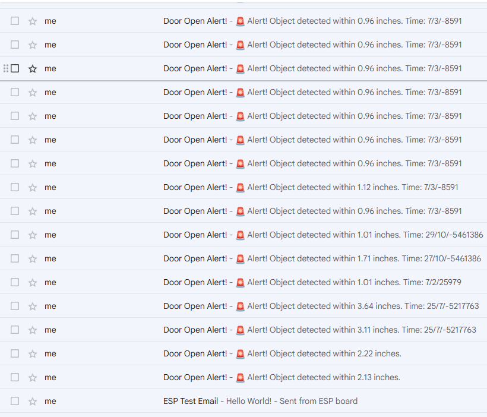

Motion Detector
I built a motion detector using an ESP32 microcontroller and wrote a C# application to handle the data processing and alert system.
Hardware: I used a PIR motion sensor connected to the ESP32. The ESP32 continuously reads the sensor's digital output and sends updates via serial or over Wi-Fi (depending on mode). It’s compact, reliable, and super easy to power using a USB-C cable or battery.
Software (ESP32): On the ESP32 side, I wrote the code in Arduino C/C++. It continuously polls the PIR sensor’s pin, and when motion is detected, it sends a signal to an email address.
Hardware: I used a PIR motion sensor connected to the ESP32. The ESP32 continuously reads the sensor's digital output and sends updates via serial or over Wi-Fi (depending on mode). It’s compact, reliable, and super easy to power using a USB-C cable or battery.
Software (ESP32): On the ESP32 side, I wrote the code in Arduino C/C++. It continuously polls the PIR sensor’s pin, and when motion is detected, it sends a signal to an email address.

